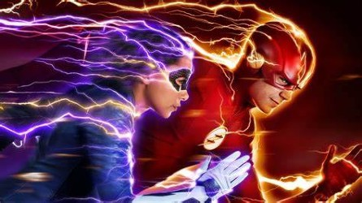

Flash
Flash sammanfattning
After being struck by lightning, Barry Allen wakes up from his coma to discover he's been given the power of super speed, becoming the next Flash, fighting crime in Central City. Barry Allen is a Central City police forensic scientist with a reasonably happy life, despite the childhood trauma of a mysterious red and yellow lightning killing his mother and framing his father. All that changes when a massive particle accelerator accident leads to Barry being struck by lightning in his lab. Coming out of coma nine months later, Barry and his new friends at S.T.A.R labs find that he now has the ability to move at superhuman speed. Furthermore, Barry learns that he is but one of many affected by that event, most of whom are using their powers for evil. Determined to make a difference, Barry dedicates his life to fighting such threats, as The Flash. While he gains allies he never expected, there are also secret forces determined to aid and manipulate him for their own agenda.

Grant Gustin
Candice Patton
Tom Cavanagh
Danielle Panabaker
Varlos Valdes
Jesse L. Martin
Danielle Nicolet
Hartley Sawyer
Keiynan Lonsdale
Patrick Sabongui
Rick Cosnett
Jessica Parker Kennedy
John Wesley Shipp